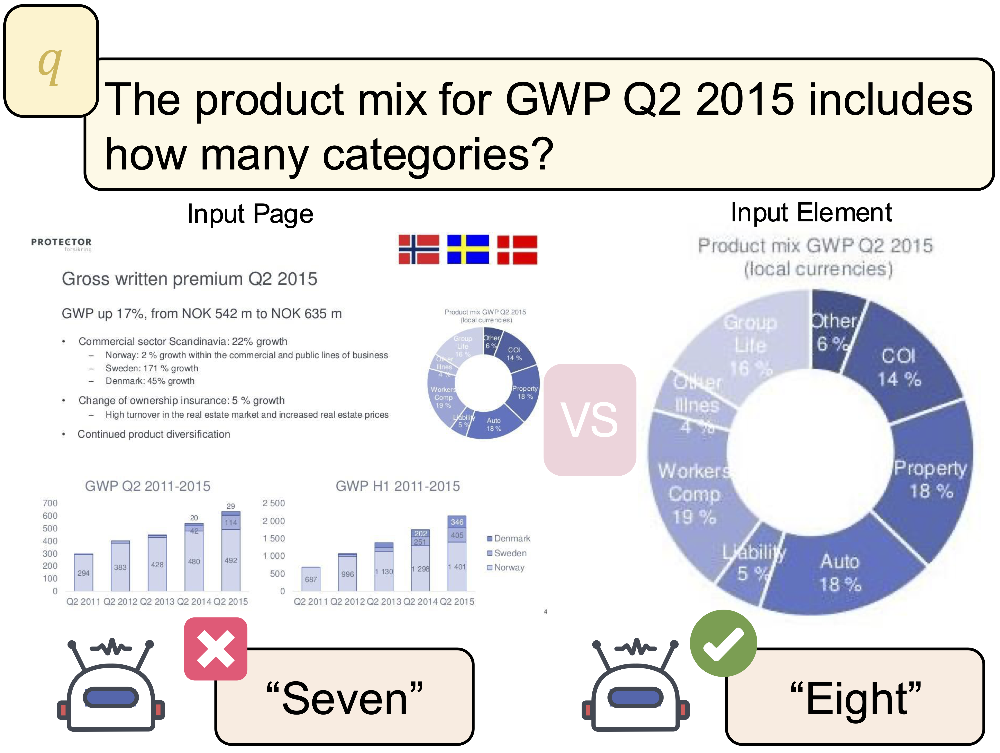
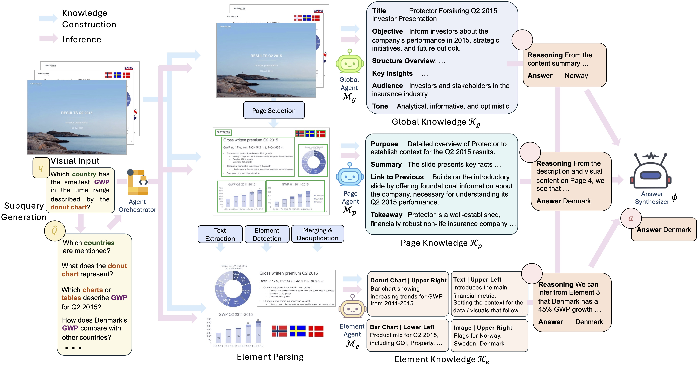
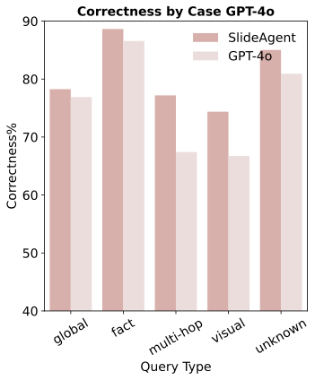
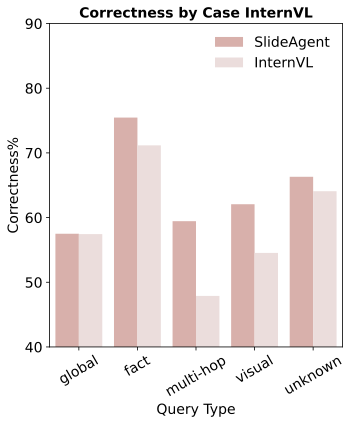
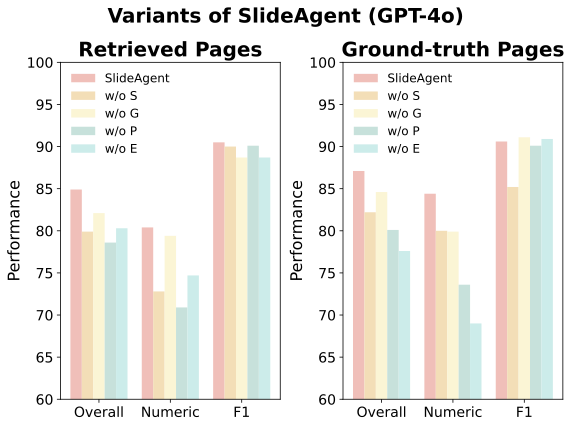
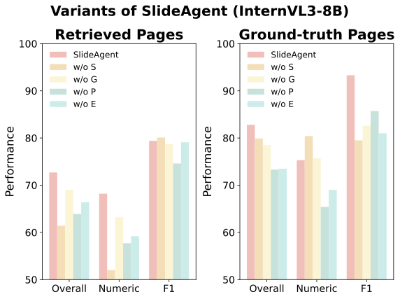
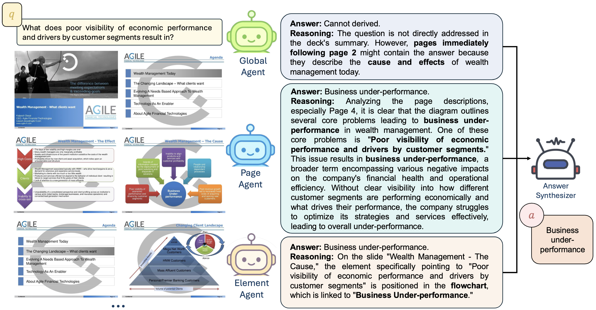

Motivation

When given the full page, the LLM miscounts the number of product mix categories. After isolating the chart, it correctly identifies all eight categories, highlighting the importance of accurate element parsing.

Multi-page visual documents such as manuals, brochures, presentations, and posters convey key information through layout, colors, icons, and cross-slide references. While large language models (LLMs) offer opportunities in document understanding, current systems struggle with complex, multi-page visual documents, particularly in fine-grained reasoning over elements and pages. We introduce SlideAgent, a versatile agentic framework for understanding multi-modal, multi-page, and multi-layout documents, especially slide decks.
SlideAgent employs specialized agents and decomposes reasoning into three specialized levels—global, page, and element—to construct a structured, query-agnostic representation that captures both overarching themes and detailed visual or textual cues. During inference, SlideAgent selectively activates specialized agents for multi-level reasoning and integrates their outputs into coherent, context-aware answers.
Extensive experiments show that SlideAgent achieves significant improvement over both proprietary (+7.9 over GPT-4o) and open-source models (+9.8 over InternVL3-8B).

When given the full page, the LLM miscounts the number of product mix categories. After isolating the chart, it correctly identifies all eight categories, highlighting the importance of accurate element parsing.
State-of-the-art MLLMs process a limited number of images at once and tend to treat each page holistically, missing fine-grained, element-level cues required for user queries. GPT-4o miscounts chart segments on a cluttered page of a slide deck, but correctly identifies all segments once the relevant chart is cropped—highlighting the importance of element-level parsing.
Most MLLMs are pre-trained on natural images, lacking exposure to domain-specific diagrams, financial charts, or scientific plots. In professional slide decks, visual elements carry specialized meanings: logos appear on every page for brand identity, color schemes encode categorical information (red for losses, green for gains), icons convey abstract concepts (lightbulbs for innovation, arrows for relationships), and spatial positioning signals importance.
Many systems rely on clean metadata—figure locations, hierarchy tags, embedded text layers—that can be unavailable or corrupted in real-world PDFs. Users may take screenshots of PDF documents, scan physical documents, export slides as flattened PDFs, or use software that strips out document structure. SlideAgent addresses these by parsing only visual images without relying on metadata.
SlideAgent is an LLM-based agentic framework for fine-grained understanding of multi-page, varying-size visual documents. Inspired by human information processing models, SlideAgent employs a hierarchical architecture with specialized agents at three levels: global (document-wide topics), page (page-specific features and cross-page relations), and element (fine-grained components such as charts, figures, and text blocks).

SlideAgent generates knowledge about input slide decks in a hierarchical manner at 3 levels: global, page, and element.
Build a hierarchical, query-agnostic knowledge base capturing global, page, and element knowledge.
Generates document-level knowledge, capturing the overall summary, objectives, and narrative flow of the document. Establishes overarching themes to support high-level reasoning about the document's purpose.
For each page, generates page-level knowledge conditioned on the page's visual content, global knowledge, and knowledge from the preceding page. Provides an intermediate representation that captures page-specific content while linking to global context.
Decomposes each page into elements using layout parsing pipeline. Integrates text detection, layout detection, and element classification. Generates element-level knowledge including semantic role, functional purpose, and relation to the slide page.
SlideAgent employs a sophisticated multi-step inference pipeline that activates specialized agents based on query requirements.
Three-level architecture (global, page, element) mirrors human information processing for comprehensive understanding
Element-level parsing enables precise spatial reasoning and visual counting beyond page-level approaches
Works with pure visual inputs without relying on PDF metadata or document structure
SlideAgent consistently outperforms strong baselines across multiple datasets and evaluation metrics, demonstrating significant improvements in both end-to-end performance and reasoning with ground-truth pages.

GPT-4o Base Model

InternVL3-8B Base Model
SlideAgent achieves the greatest improvement on multi-hop reasoning (+9.8 points) and visual/layout questions (+7.7 points), demonstrating the benefit of fine-grained element-level reasoning.
GPT-4o, Gemini 2.0/2.5, Claude 3.7
Llama-3.2, InternVL3, Phi-3, Qwen2.5-VL
VisRAG, VDocRAG, COLPALI
We analyze the contribution of each agent by systematically removing components. The page agent proves most critical, as it serves as the structural bridge between global themes and fine-grained details.

GPT-4o Ablation Results

InternVL3-8B Ablation Results
Removing the page agent causes the steepest degradation (−6.3 for GPT-4o, −8.8 for InternVL3-8B), demonstrating its critical role in integrating global context with page-specific details and enabling cross-slide coherence.

Example answers generated by SlideAgent. Agents at different levels work together to provide comprehensive responses with explicit provenance.
Global Agent: Performs deck-level triage and identifies relevant sections based on overall document themes.
Page Agent: Pinpoints specific pages and their relationships, understanding page-to-page narrative flow.
Element Agent: Grounds the answer by parsing fine-grained visual elements (charts, diagrams, text blocks) and extracting verbatim content.
Answer Synthesizer: Fuses signals from all agents to return accurate answers with explicit provenance (page number, element type, visual grounding).
TO BE ADDED
The data, code and model checkpoint are intended and licensed mainly for research.
This website is licensed under the Creative Commons Attribution-ShareAlike 4.0 International License.